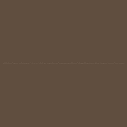
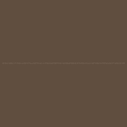
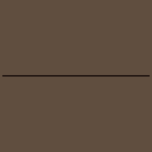
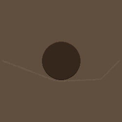
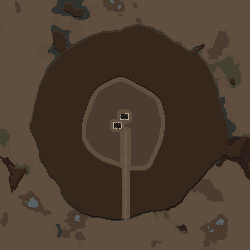
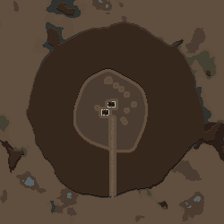
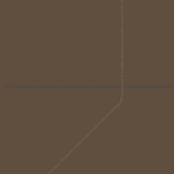

Map Preview

게임에서 생성한 250×250 맵과 Map Preview입니다. 다섯 종류의 길을 비교하기 위해 첫 다섯 맵은 흙 평지로 통일했습니다. 얇은 오솔길도 확인할 수 있도록 그림을 크게 표시합니다.













기존 월드 도로는 Map Preview 기본 단계에서 생략됩니다. 마지막 교차 사례처럼 실제 맵에서는 기존 길을 보존하므로 일부 모습이 다릅니다. 부속 건물·다리·터널은 이번 범위에 포함하지 않습니다.